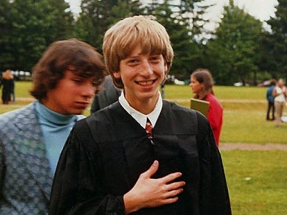
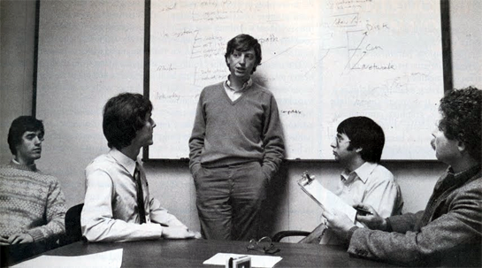
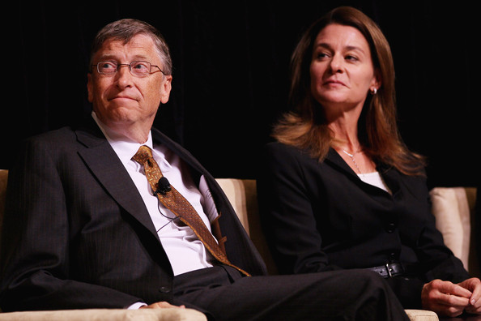

<TechiePediaTM/>
Thinkers// Believers // Pioneers

"Success is a lousy teacher. It seduces smart people
into thinking they can't lose."
"It's fine to celebrate success but it is more important to heed the lessons of failure.
"
|
||||||||||||||||
|
Contents :
William Henry "Bill" Gates III (born October 28, 1955) is an American business magnate, investor, author, and philanthropist. In 1975, Gates and Paul Allen co-founded Microsoft, which became the world's largest PC software company. During his career at Microsoft, Gates held the positions of chairman, CEO and chief software architect, and was the largest individual shareholder until May 2014. Gates has authored and co-authored several books. Since 1987, Gates has been included in the Forbes list of the world's wealthiest people and was the wealthiest from 1995 to 2007, again in 2009, and has been since 2014. Between 2009 and 2014, his wealth doubled from US$40 billion to more than US$82 billion. Between 2013 and 2014, his wealth increased by US$15 billion. Gates is currently the richest person in the world, with an estimated net worth of US$84.2 billion as of January 2017. Gates is one of the best-known entrepreneurs of the personal computer revolution. He has been criticized for his business tactics, which have been considered anti-competitive, an opinion that has in some cases been upheld by numerous court rulings. Later in his career, Gates pursued a number of philanthropic endeavors, donating large amounts of money to various charitable organizations and scientific research programs through the Bill & Melinda Gates Foundation, established in 2000. Gates stepped down as chief executive officer of Microsoft in January 2000. He remained as chairman and created the position of chief software architect for himself. In June 2006, Gates announced that he would be transitioning from full-time work at Microsoft to part-time work, and full-time work at the Bill & Melinda Gates Foundation. He gradually transferred his duties to Ray Ozzie and Craig Mundie. He stepped down as chairman of Microsoft in February 2014, taking on a new post as technology adviser to support the then newly appointed CEO Satya Nadella. |
||||||||||||||||
|
Early Life :

A 14 year old Bill Gates in Lakeside School. Gates was born in Seattle, Washington on October 28, 1955. He is the son of William H. Gates Sr. (born 1925) and Mary Maxwell Gates (1931–1994). His ancestry includes English, German, Irish, and Scots-Irish. His father was a prominent lawyer, and his mother served on the board of directors for First Interstate BancSystem and the United Way. Gates' maternal grandfather was JW Maxwell, a national bank president. Gates has one elder sister, Kristi (Kristianne), and one younger sister, Libby. He is the fourth of his name in his family, but is known as William Gates III or "Trey" because his father had the "II" suffix. Early on in his life, Gates' parents had a law career in mind for him. When Gates was young, his family regularly attended a church of the Congregational Christian Churches, a Protestant Reformed denomination. The family encouraged competition; one visitor reported that "it didn't matter whether it was hearts or pickleball or swimming to the dock ... there was always a reward for winning and there was always a penalty for losing". At 13, he enrolled in the Lakeside School, a private preparatory school. When he was in the eighth grade, the Mothers Club at the school used proceeds from Lakeside School's rummage sale to buy a Teletype Model 33 ASR terminal and a block of computer time on a General Electric (GE) computer for the school's students. Gates took an interest in programming the GE system in BASIC, and was excused from math classes to pursue his interest. He wrote his first computer program on this machine: an implementation of tic-tac-toe that allowed users to play games against the computer. Gates was fascinated by the machine and how it would always execute software code perfectly. When he reflected back on that moment, he said, "There was just something neat about the machine." After the Mothers Club donation was exhausted, he and other students sought time on systems including DEC PDP minicomputers. One of these systems was a PDP-10 belonging to Computer Center Corporation (CCC), which banned four Lakeside students – Gates, Paul Allen, Ric Weiland, and Kent Evans – for the summer after it caught them exploiting bugs in the operating system to obtain free computer time. At the end of the ban, the four students offered to find bugs in CCC's software in exchange for computer time. Rather than use the system via Teletype, Gates went to CCC's offices and studied source code for various programs that ran on the system, including programs in Fortran, Lisp, and machine language. The arrangement with CCC continued until 1970, when the company went out of business. The following year, Information Sciences, Inc. hired the four Lakeside students to write a payroll program in Cobol, providing them computer time and royalties. After his administrators became aware of his programming abilities, Gates wrote the school's computer program to schedule students in classes. He modified the code so that he was placed in classes with "a disproportionate number of interesting girls." He later stated that "it was hard to tear myself away from a machine at which I could so unambiguously demonstrate success." At age 17, Gates formed a venture with Allen, called Traf-O-Data, to make traffic counters based on the Intel 8008 processor. In early 1973, Bill Gates served as a congressional page in the U.S. House of Representatives. Gates graduated from Lakeside School in 1973, and was a National Merit Scholar. He scored 1590 out of 1600 on the Scholastic Aptitude Tests and enrolled at Harvard College in the autumn of 1973. He chose a pre-law major but took rigorous mathematics and graduate level computer science courses. While at Harvard, he met fellow student Steve Ballmer. Gates left Harvard after two years while Ballmer would stay and graduate magna cum laude. Years later, Ballmer succeeded Gates as CEO of Microsoft before resigning from the company in 2014. In his second year, Gates devised an algorithm for pancake sorting as a solution to one of a series of unsolved problems presented in a combinatorics class by Harry Lewis, one of his professors. Gates' solution held the record as the fastest version for over thirty years; its successor is faster by only one percent. His solution was later formalized in a published paper in collaboration with Harvard computer scientist Christos Papadimitriou. Gates did not have a definite study plan while a student at Harvard and spent a lot of time using the school's computers. Gates remained in contact with Paul Allen, and he joined him at Honeywell during the summer of 1974. The following year saw the release of the MITS Altair 8800 based on the Intel 8080 CPU, and Gates and Allen saw this as the opportunity to start their own computer software company. Gates dropped out of Harvard at this time. He had talked this decision over with his parents, who were supportive of him after seeing how much Gates wanted to start his own company. Gates explained his official status with Harvard that, "...if things [Microsoft] hadn't worked out, I could always go back to school. I was officially on [a] leave [of absence]." |
||||||||||||||||
|
Establishment Of Microsoft : After reading the January 1975 issue of Popular Electronics that demonstrated the Altair 8800, Gates contacted Micro Instrumentation and Telemetry Systems (MITS), the creators of the new microcomputer, to inform them that he and others were working on a BASIC interpreter for the platform. In reality, Gates and Allen did not have an Altair and had not written code for it; they merely wanted to gauge MITS's interest. MITS president Ed Roberts agreed to meet them for a demo, and over the course of a few weeks they developed an Altair emulator that ran on a minicomputer, and then the BASIC interpreter. The demonstration, held at MITS's offices in Albuquerque, was a success and resulted in a deal with MITS to distribute the interpreter as Altair BASIC. Paul Allen was hired into MITS, and Gates took a leave of absence from Harvard to work with Allen at MITS in Albuquerque in November 1975. They named their partnership "Micro-Soft" and had their first office located in Albuquerque. Within a year, the hyphen was dropped, and on November 26, 1976, the trade name "Microsoft" was registered with the Office of the Secretary of the State of New Mexico. Gates never returned to Harvard to complete his studies.

Microsoft team in its early days of inception. Microsoft's Altair BASIC was popular with computer hobbyists, but Gates discovered that a pre-market copy had leaked into the community and was being widely copied and distributed. In February 1976, Gates wrote an Open Letter to Hobbyists in the MITS newsletter in which he asserted that more than 90% of the users of Microsoft Altair BASIC had not paid Microsoft for it and by doing so the Altair "hobby market" was in danger of eliminating the incentive for any professional developers to produce, distribute, and maintain high-quality software. This letter was unpopular with many computer hobbyists, but Gates persisted in his belief that software developers should be able to demand payment. Microsoft became independent of MITS in late 1976, and it continued to develop programming language software for various systems. The company moved from Albuquerque to its new home in Bellevue, Washington, on January 1, 1979. During Microsoft's early years, all employees had broad responsibility for the company's business. Gates oversaw the business details, but continued to write code as well. In the first five years, Gates personally reviewed every line of code the company shipped, and often rewrote parts of it as he saw fit. IBM approached Microsoft in July 1980 regarding its upcoming personal computer, the IBM PC. The computer company first proposed that Microsoft write the BASIC interpreter. When IBM's representatives mentioned that they needed an operating system, Gates referred them to Digital Research (DRI), makers of the widely used CP/M operating system. IBM's discussions with Digital Research went poorly, and they did not reach a licensing agreement. IBM representative Jack Sams mentioned the licensing difficulties during a subsequent meeting with Gates and told him to get an acceptable operating system. A few weeks later, Gates proposed using 86-DOS (QDOS), an operating system similar to CP/M that Tim Paterson of Seattle Computer Products (SCP) had made for hardware similar to the PC. Microsoft made a deal with SCP to become the exclusive licensing agent, and later the full owner, of 86-DOS. After adapting the operating system for the PC, Microsoft delivered it to IBM as PC DOS in exchange for a one-time fee of $50,000. Gates did not offer to transfer the copyright on the operating system, because he believed that other hardware vendors would clone IBM's system. They did, and the sales of MS-DOS made Microsoft a major player in the industry. Despite IBM's name on the operating system the press quickly identified Microsoft as being very influential on the new computer. PC Magazine asked if Gates were "the man behind the machine?", and InfoWorld quoted an expert as stating "it's Gates' computer". Gates oversaw Microsoft's company restructuring on June 25, 1981, which re-incorporated the company in Washington state and made Gates the president of Microsoft and its board chairman. |
||||||||||||||||
|
Personal Life :

Bill with his wife Melinda Gates. Gates married Melinda French in Hawaii on January 1, 1994; he was 38 and she was 29. They have three children: Jennifer Katharine (born 1996), Rory John (born 1999), and Phoebe Adele (born 2002). The family resides in the Gates' home, an earth-sheltered house in the side of a hill overlooking Lake Washington in Medina near Seattle in the state of Washington, United States. According to 2007 King County public records, the total assessed value of the property (land and house) is $125 million, and the annual property tax is $991,000. The 66,000 sq ft (6,100 m2) estate has a 60-foot (18 m) swimming pool with an underwater music system, as well as a 2,500 sq ft (230 m2) gym and a 1,000 sq ft (93 m2) dining room. In an interview with Rolling Stone, Gates stated in regard to his faith : The moral systems of religion, I think, are super important. We've raised our kids in a religious way; they've gone to the Catholic church that Melinda goes to and I participate in. I've been very lucky, and therefore I owe it to try and reduce the inequity in the world. And that's kind of a religious belief. I mean, it's at least a moral belief. In the same interview, Gates said: "I agree with people like Richard Dawkins that mankind felt the need for creation myths. Before we really began to understand disease and the weather and things like that, we sought false explanations for them. Now science has filled in some of the realm – not all – that religion used to fill. But the mystery and the beauty of the world is overwhelmingly amazing, and there's no scientific explanation of how it came about. To say that it was generated by random numbers, that does seem, you know, sort of an uncharitable view [laughs]. I think it makes sense to believe in God, but exactly what decision in your life you make differently because of it, I don't know." Among Gates' private acquisitions is the Codex Leicester, a collection of writings by Leonardo da Vinci, which Gates bought for $30.8 million at an auction in 1994. Gates is also known as an avid reader, and the ceiling of his large home library is engraved with a quotation from The Great Gatsby. He also enjoys playing bridge, tennis, and golf. Gates was number one on the Forbes 400 list from 1993 through to 2007, and number one on Forbes list of The World's Richest People from 1995 to 2007 and 2009. In 1999, his wealth briefly surpassed $101 billion, causing the media to call Gates a "centibillionaire". Despite his wealth and extensive business travel Gates usually flew coach until 1997, when he bought a private jet. Since 2000, the nominal value of his Microsoft holdings has declined due to a fall in Microsoft's stock price after the dot-com bubble burst and the multibillion-dollar donations he has made to his charitable foundations. In a May 2006 interview, Gates commented that he wished that he were not the richest man in the world because he disliked the attention it brought. In March 2010, Gates was the second wealthiest person behind Carlos Slim, but regained the top position in 2013, according to the Bloomberg Billionaires List. Carlos Slim retook the position again in June 2014 (but then lost the top position back to Gates). Gates has several investments outside Microsoft, which in 2006 paid him a salary of $616,667 and $350,000 bonus totalling $966,667. He founded Corbis, a digital imaging company, in 1989. In 2004, he became a director of Berkshire Hathaway, the investment company headed by long-time friend Warren Buffett. In 2016, he revealed that he was color-blind when discussing his gaming habits. |
||||||||||||||||